肥而不溺~
OCR 识别提示（待核对）
- OCR 自动识别文字，尚未逐字校对；可能错字、漏字、漏行，数字、姓名、标点及断行也可能有误，请以截图为准。
- 这里只保留 PDF 已截到的正文、留言和作者回复；截图以外的留言不在此存档中。
- 未从截图推断留言总数或回复关系；手机界面文字也可能混入 OCR。
- 低置信标记仅为机器提示，并不表示未标记的文字已经准确。
识别工具：tesseract 5.5.0 · tesseract-ocr/tessdata_best chi_sim。识别器置信度仅用于提示核对，不是文字准确率。
第 1 页 · 原始截图
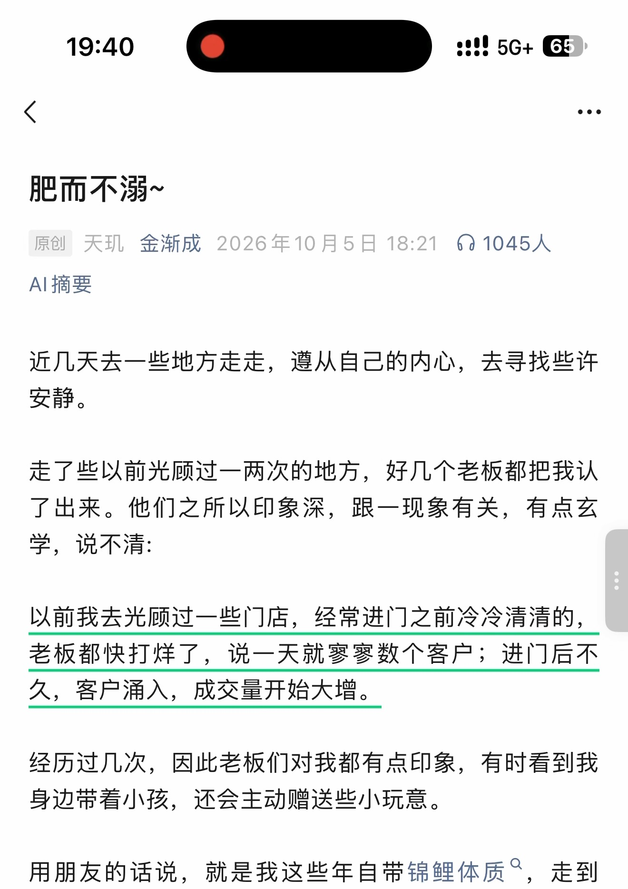
查看本页自动识别文字（OCR待核对） · 15 处低置信度提示
以下为未经逐字核对的自动识别结果，请以上方原图为准。
识别器标记 15 处低置信度，请对照截图核对
这些是识别器的风险提示，并不等于已确认的错误。
- oo
- 肥而不濡 ~
- 原创天现金渐成 2026 年 10 月 5 日 18:21 介 1045 人
- 近几天去一些地方走走， 遵从自己的内心， 去寻找些许
- 了出来。 他们之所以印象深， 跟一现象有关， 有点玄
- 老板都快打料了， 说一天就寥寥数个客户 ; 进门后不
- 久， 客户涌入， 成交量开始大增。
- 用朋友的话说， 就是我这些年自带锦鲤体质 ~“， 走到
第 2 页 · 原始截图
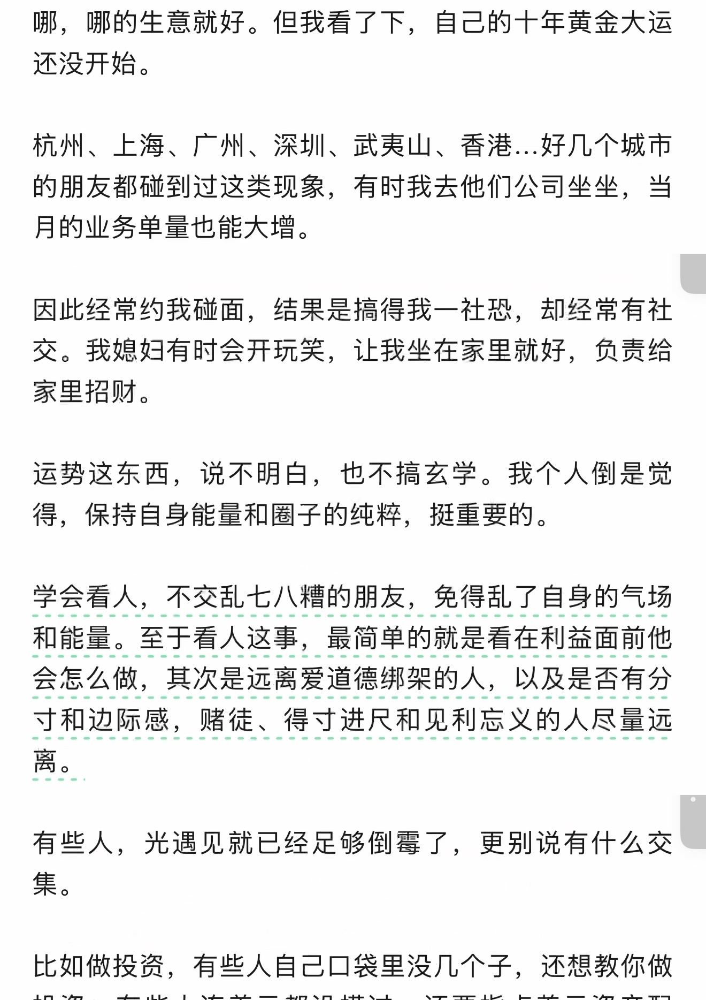
查看本页自动识别文字（OCR待核对） · 27 处低置信度提示
以下为未经逐字核对的自动识别结果，请以上方原图为准。
识别器标记 27 处低置信度，请对照截图核对
这些是识别器的风险提示，并不等于已确认的错误。
- 哪， 哪的生意就好。 但我看了下， 自己的十年黄金大运
- 杭州、 上海、 广州、 深圳、 武夷山、 香港 … 好几个城市
- 的朋友都磁到过这类现象， 有时我去他们公司坐坐， 当
- 因此经常约我碰面， 结果是搞得我一社恐， 却经常有社
- 交。 我媳妇有时会开玩笑， 让我坐在家里就好， 负责给
- 运势这东西， 说不明白， 也不搞科学。 我个人倒是觉
- 得， 保持自身能量和圈子的纯粹， 挺重要的。
- 学会看人， 个交乱于八重的朋友， 免得乱了自身的，“ 场
- 有些人， 光遇见就已经足够倒霉了， 更别说有什么交量
- 比如做投资， 有些人自己口航里没几个子， 还想教你做
第 3 页 · 原始截图
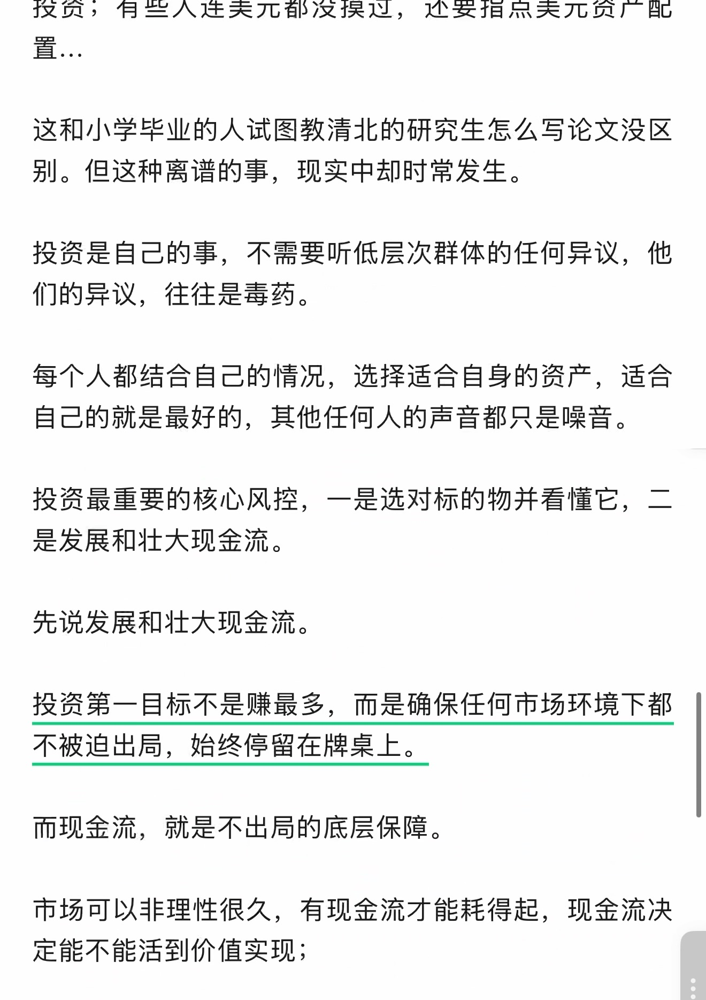
查看本页自动识别文字（OCR待核对） · 5 处低置信度提示
以下为未经逐字核对的自动识别结果，请以上方原图为准。
识别器标记 5 处低置信度，请对照截图核对
这些是识别器的风险提示，并不等于已确认的错误。
- 投资 ; 有些人连美元都没摸过， 还要指点美元资产配
- 置 …
- 投资最重要的核心风控， 一是选对标的物并看懂它， 二
- 不被迫出局， 始终停留在牌桌上。
第 4 页 · 原始截图
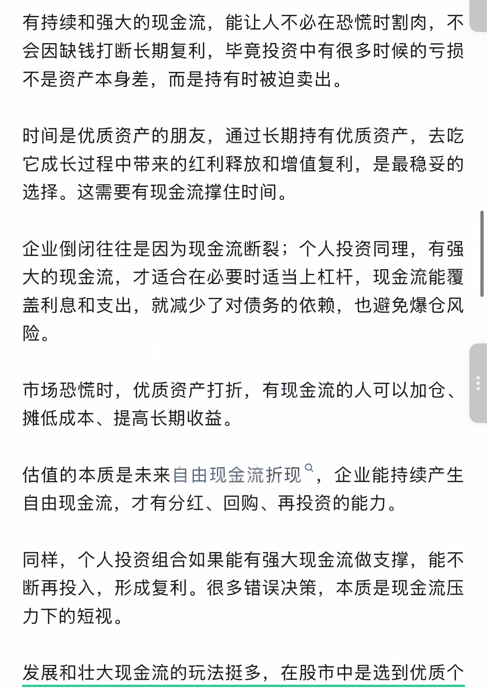
查看本页自动识别文字（OCR待核对） · 17 处低置信度提示
以下为未经逐字核对的自动识别结果，请以上方原图为准。
识别器标记 17 处低置信度，请对照截图核对
这些是识别器的风险提示，并不等于已确认的错误。
- 有持续和强大的现金流， 能让人不必在丽慌时割肉， 不
- 会因缺钱打断长期复利， 毕竟投资中有很多时候的亏损
- 它成长过程中带来的红利释放和增值复利， 是最稳妥的
- 企业倒闭往往是因为现金流断裂， 个人投资同理， 有强
- 大的现金流， 才适合在必要时适当上杠杆， 现金流能获
- 盖利息和支出， 就减少了对债务的依赖， 也吕免爆仓风
- 市场恐慌时， 优质资产打折， 有现金流的人可以加仓、 上
- 捧低成本、 提高长期收益。
- 估值的本质是未来自由现金流折现 “， 企业能持续产生
- 发展和壮大现金流的玩法捍多， 在股市中是选到优质个
第 5 页 · 原始截图
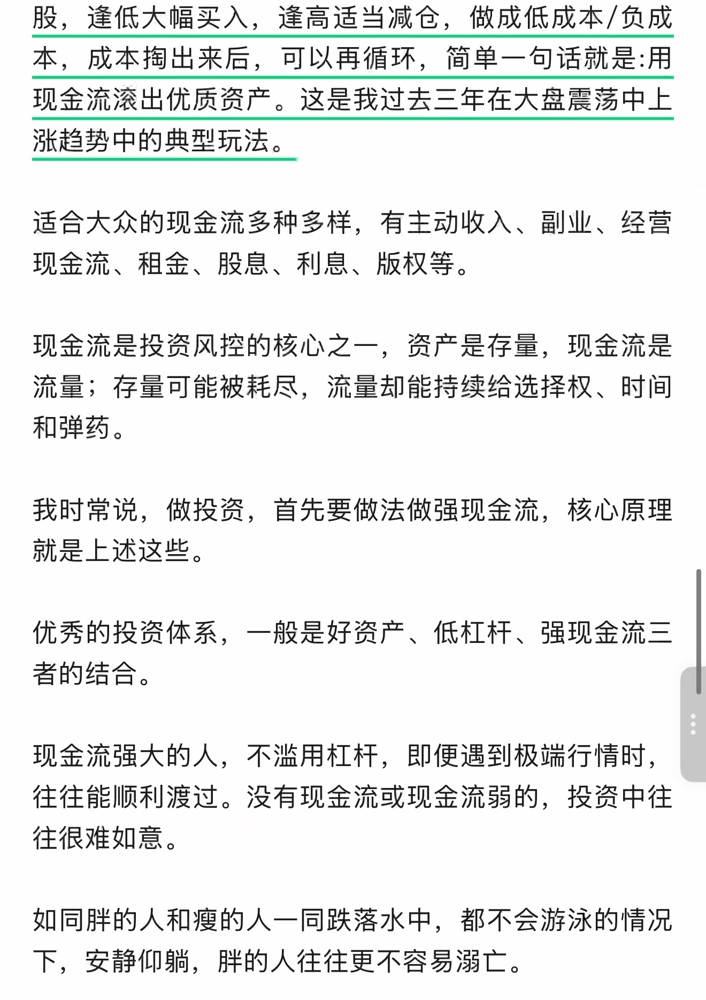
查看本页自动识别文字（OCR待核对） · 16 处低置信度提示
以下为未经逐字核对的自动识别结果，请以上方原图为准。
识别器标记 16 处低置信度，请对照截图核对
这些是识别器的风险提示，并不等于已确认的错误。
- 股， 违低大幅买入， 违高适当减仓， 做成低成本 / 负成
- 现金流滚出优质资产。 这是我过去三年在大盘震荡中上
- 我时常说， 做投资， 首先要做法做强现金流， 核心原理
- 优秀的投资体系， 一般是好资产、 低杠杆、 强现金流三
- 现金流强大的人， 不滥用杠杆， 即便遇到极端行情时，
- 如同胖的人和瘦的人一同跌落水中， 都不会游泳的情况
- 下， 安静仰策， 胖的人往往更不容易溺亡。
第 6 页 · 原始截图
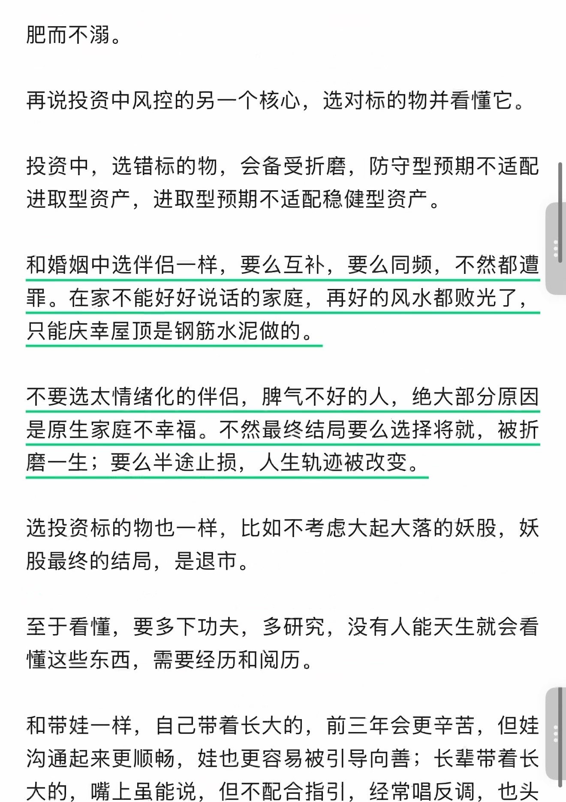
查看本页自动识别文字（OCR待核对） · 24 处低置信度提示
以下为未经逐字核对的自动识别结果，请以上方原图为准。
识别器标记 24 处低置信度，请对照截图核对
这些是识别器的风险提示，并不等于已确认的错误。
- 肥而不计。
- 进取型资产， 进取型预期不适配稳健型资产。
- 只能庆幸屋顶是钢筋水泥做的。
- 不要选太情绪化的伴侣， 脾气不好的人， 绝大部分原因
- 是原生家庭不幸福。 不然最终结局要么选择将就， 被折
- 磨一生 ; 要么半途止损， 人生轨迹被改变。
- 选投资标的物也一样， 比如不考虑大起大落的妖股， 妖
- 至于看懂， 要多下功夫， 多研究， 没有人能天生就会看
- 懂这些东西， 需要经历和阅历。
- 和带娃一样， 自己带着长大的， 前三年会更壮苦， 但娃
- 沟通起来更顺畅， 娃也更容易被引导向善 ; 长辈带着长
- 大的， 嘴上虽能说， 但不配合指引， 经常唱反调， 也头
第 7 页 · 原始截图
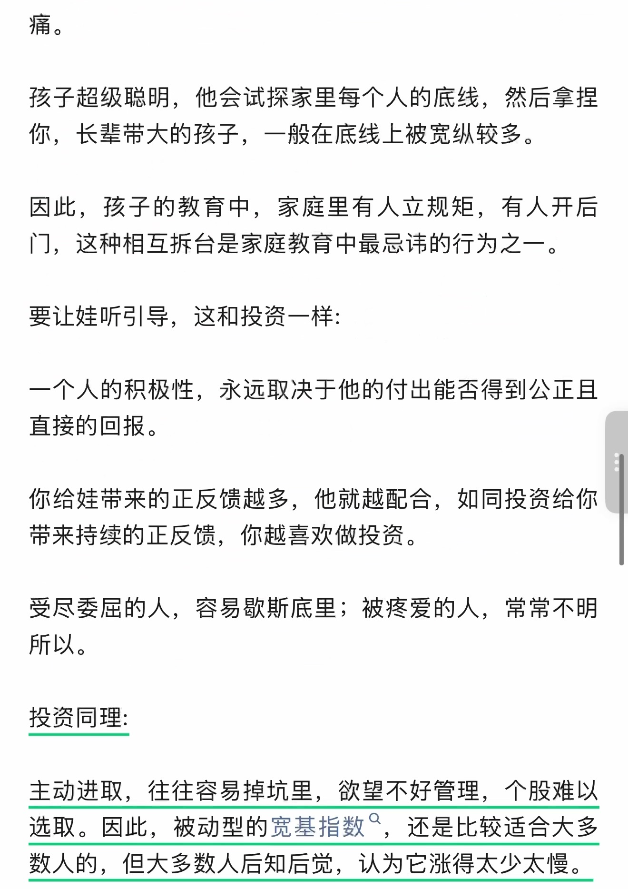
查看本页自动识别文字（OCR待核对） · 15 处低置信度提示
以下为未经逐字核对的自动识别结果，请以上方原图为准。
识别器标记 15 处低置信度，请对照截图核对
这些是识别器的风险提示，并不等于已确认的错误。
- 孩子超级聪明， 他会试探家里每个人的底线， 然后拿提
- 因此， 孩子的教育中， 家庭里有人立规矩， 有人开后
- 门， 这种相互拆台是家庭教育中最忌讳的行为之一。
- 你给娃带来的正反馈越多， 他就越配合， 如同投资给你
- 带来持续的正反馈， 你越喜欢做投资。
- 受尽委屈的人， 容易歇斯底里 ; 被疼爱的人， 常常不明
- 主动进取， 人往往容易掉坑里， 欲望不好管理， 个股难以
- 数人的， 但大多数人后知后觉， 认为它涨得太少太慢。
第 8 页 · 原始截图
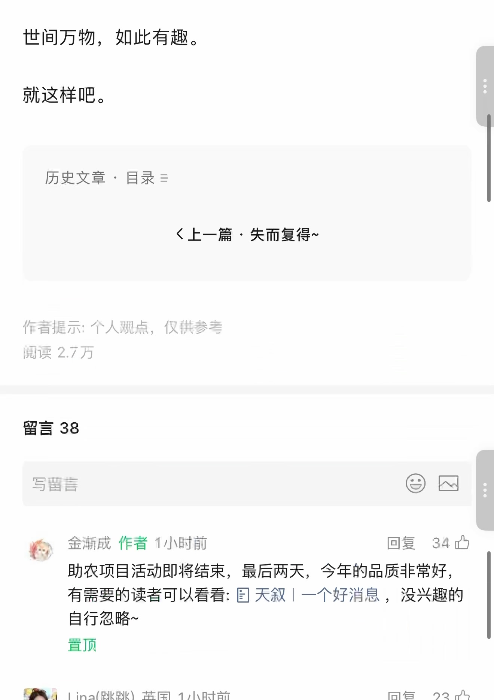
查看本页自动识别文字（OCR待核对） · 21 处低置信度提示
以下为未经逐字核对的自动识别结果，请以上方原图为准。
识别器标记 21 处低置信度，请对照截图核对
这些是识别器的风险提示，并不等于已确认的错误。
- 历史文章， 目录 =
- 《上一篇失而复得 ~
- 作音握示 ; 个人对点， 仅拱参瓜
- 闭衣 2.7 万
- 也由加
- 稚， 多当成作者 1 小时前回复 ”34 内
- 有需要的读者可以看看 : 加天氢 | 一个好消息， 没兴趣的
第 9 页 · 原始截图
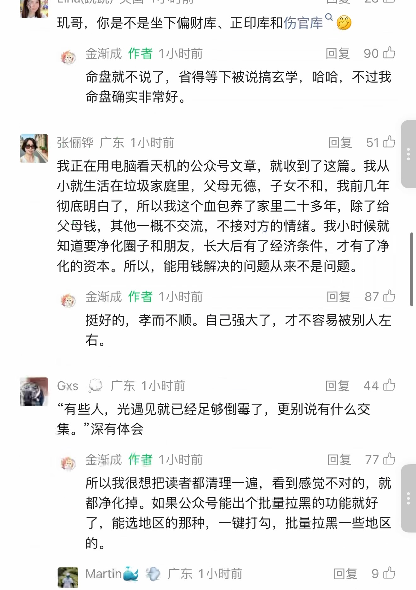
查看本页自动识别文字（OCR待核对） · 52 处低置信度提示
以下为未经逐字核对的自动识别结果，请以上方原图为准。
识别器标记 52 处低置信度，请对照截图核对
这些是识别器的风险提示，并不等于已确认的错误。
- Lina( 跳跳 ) 英国 1 小时前回复 ”23 轿
- ”于哥， 你是不是坐下偏财库、 正印库和伤官库 ” 丛
- 稚， 金渐成作者 1 小时前回复 90 办
- 命盘就不说了， 省得等下被说搞玄学， 哈哈， 不过我
- 张债锋广东 1 小时前回复 ”51 让
- ， 我正在用电脑看天机的公众号文章， 就收到了这篇。 我从
- 知道要净化圈子和朋友， 长大后有了经济条件， 才有了净
- 敬人金渐成作者 1 小时前回复 87 办
- 二 Gxs 名广东 1 小时前回复 44 办
- “有些人， 光允见就已经足够倒霉了， 更别说有什么交
- 集。 深有体会
- 入人金渐成作者 1 小时前回复 “77 办
- 所以我很想把读者都清理一遍， 看到感觉不对的， 就
- 了， 能选地区的那种， 一键打勾， 批量拉黑一些地区
- 国 vartn 兰仑广东 1 小时前回复 9 办
第 10 页 · 原始截图
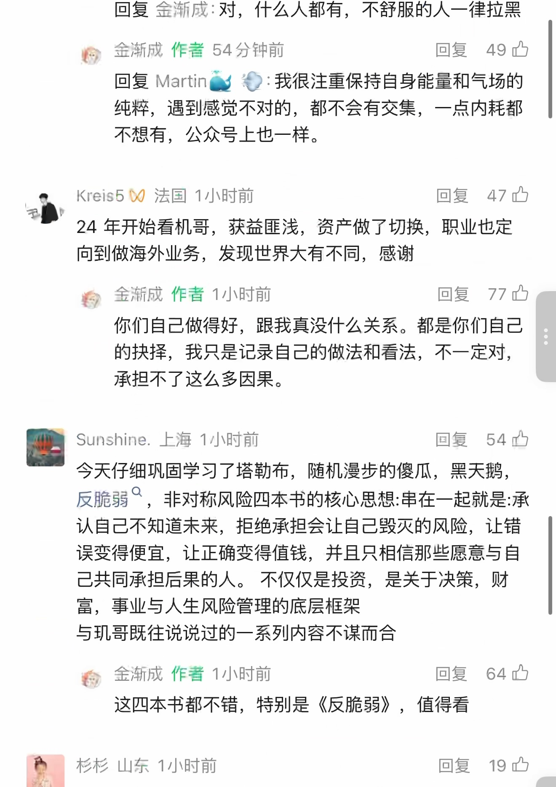
查看本页自动识别文字（OCR待核对） · 50 处低置信度提示
以下为未经逐字核对的自动识别结果，请以上方原图为准。
识别器标记 50 处低置信度，请对照截图核对
这些是识别器的风险提示，并不等于已确认的错误。
- 二
- 回复金渐成 :对， 什么人都有， 不舒服的人一律拉黑
- 办金渐成作者 54 分钟前回复 ”49 内
- 回复 Martin 生 { 人 : 我很注环保持自身能量和气场的
- 纯粹， 遇到感觉不对的， 都不会有交集， 一点内耗都
- Kreis5 % 法国 1 小时前回复 ”47 中
- 24 年开始看机哥， 获益匪浅， 资产做了切换， 职业也定
- 和八， 金渐成作者 1 小时前回复 77 四
- 的抉择， 我只是记录自己的做法和看法， 不一定对，
- Sunshine. 上海 1 小时前回复 ”54 四
- 今天仔细巩固学习了塔勒布， 随机漫步的傻瓜， 黑天负，
- 反脆弱 ”， 非对称风险四本书的核心思想 : 串在一起就是 : 承
- 认自己不知道未来， 拒绝承担会让自己毁灭的风险， 让错
- 误变得便宜， 让正确变得值钱， 并且只相信那些愿意与自
- 与现哥既往说说过的一系列内容不谋而合
- 合金渐成作者 1 小时前回复 ”64 办
- 这四本书都不错， 特别是 《反脆弱》， 值得看
- 杉杉山东 1 小时前回复 ”19 办
第 11 页 · 原始截图
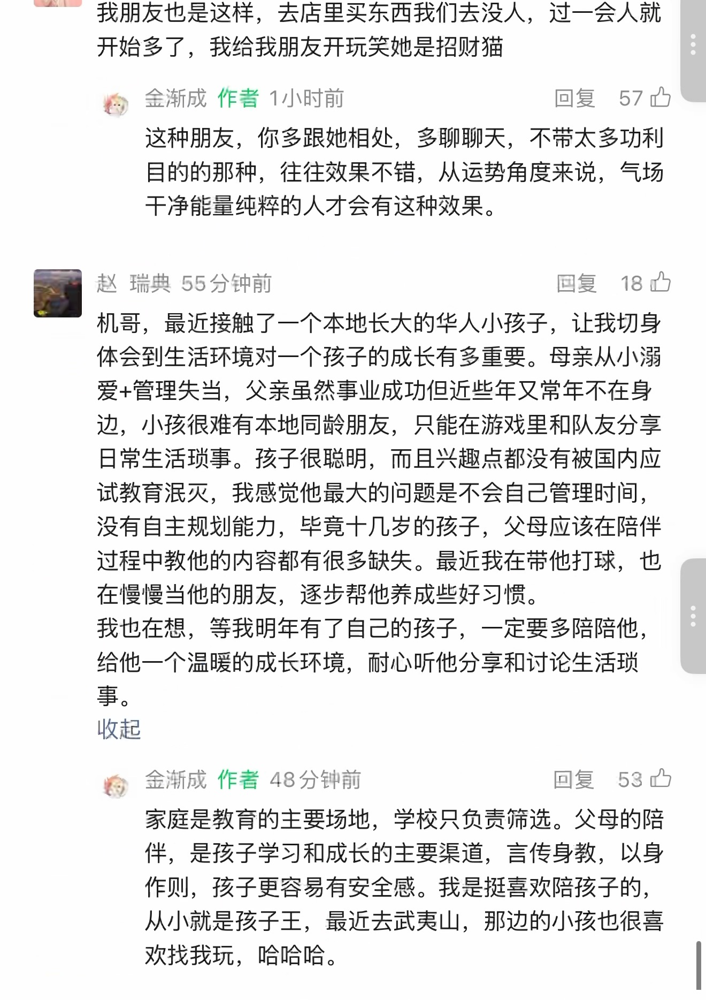
查看本页自动识别文字（OCR待核对） · 30 处低置信度提示
以下为未经逐字核对的自动识别结果，请以上方原图为准。
识别器标记 30 处低置信度，请对照截图核对
这些是识别器的风险提示，并不等于已确认的错误。
- 我朋友也是这样， 去店里买东西我们去没人， 过一会人就
- 开始多了， 我给我朋友开玩笑她是招财猎
- 合金渐成作者 1 小时前回复 ”57 办
- 目的的那种， 往往效果不错， 从运势角度来说， 气场
- 图赵瑞典 55 分钟前回复而已
- 机哥， 最近接触了一个本地长大的华人小孩子， 让我切身
- 体会到生活环境对一个孩子的成长有多重要。 母亲从小澳
- 日常生活琐事。 孩子很聪明， 而且兴趣点都没有被国内应
- 试教育混灭， 我感觉他最大的问题是不会自己管理时间，
- 没有自主规划能力， 毕竞十几岁的孩子， 父母应该在陪伴
- 在慢慢当他的朋友， 逐步帮他养成些好习惯。
- 给他一个温暖的成长环境， 耐心听他分享和讨论生活琐
- 第金渐成作者 48 分钟前回复 ”53 四
- 家庭是教育的主要场地， 学校只负责筛选。 父母的陪
- 作则， 孩子更容易有安全感。 我是报喜欢陪孩子的，
- 从小就是孩子王， 最近去武夷山， 那边的小孩也很喜
第 12 页 · 原始截图
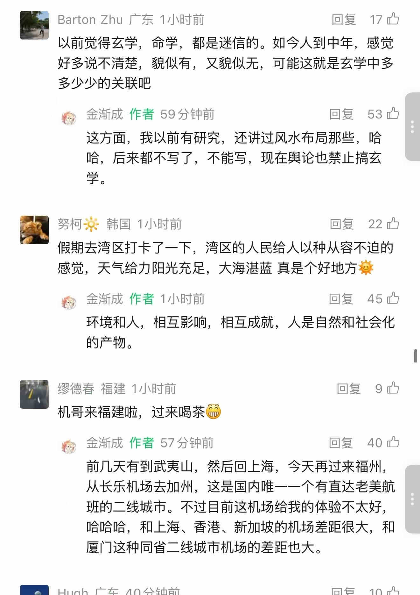
查看本页自动识别文字（OCR待核对） · 51 处低置信度提示
以下为未经逐字核对的自动识别结果，请以上方原图为准。
识别器标记 51 处低置信度，请对照截图核对
这些是识别器的风险提示，并不等于已确认的错误。
- Barton Zhu 广东 1 小时前回复已
- 以前党得玄学， 命学， 都是迷信的。 如今人到中年， 感觉
- 好多说不清楚， 和貌似有， 又貌似无， 可能这就是攻学中多
- 交， 人金渐成作者 59 分钟前回复 ”53 办
- 哈， 后来都不写了， 不能写， 现在与论也禁止搞
- 努柯况 : 韩国 1 小时前回复 ”22 办
- 假期去湾区打卡了一下， 湾区的人民给人以种从容不迫的
- 感觉， 天气给力阳光充足， 大海湛蓝真是个好地方阁
- 准， 金渐成作者 1 小时前回复 45 办
- 纪德春福建 1 小时前回复 9 内
- 机哥来福建啦， 过来喝茶偶
- 难， 金渐成作者 57 分钟前回复 ”40 办
- 前几天有到武夷山， 然后回上海， 今天再过来福州，
- 哈哈哈， 和上海、 香港、 新加坡的机场差距很大， 和
- 厦门这种同省二线城市机场的差距也大。
- Hugh 广东 40 分钟前回复记忆
第 13 页 · 原始截图
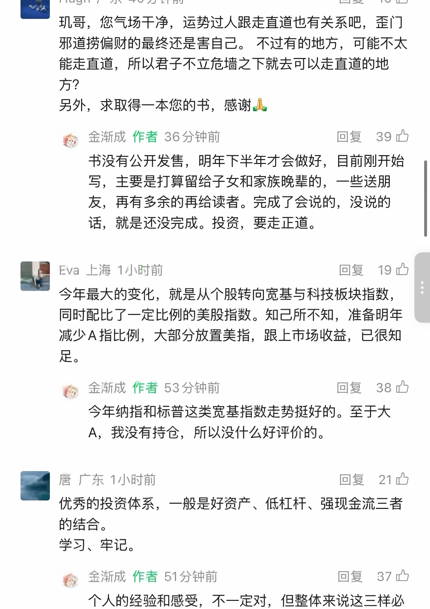
查看本页自动识别文字（OCR待核对） · 39 处低置信度提示
以下为未经逐字核对的自动识别结果，请以上方原图为准。
识别器标记 39 处低置信度，请对照截图核对
这些是识别器的风险提示，并不等于已确认的错误。
- 现哥， 您气场干净， 运势过人跟走直道也有关系吧， 厅门
- 那道捞偏财的最终还是害自己。 不过有的地方， 可能不太
- 另外， 求取得一本您的书， 感谢由
- 爸， 金渐成作者 36 分钟前回复 39 办
- 书没有公开发售， 了明年下半年才会做好， 目前刚开始
- 写， 主要是打算留给子女和家族晚辈的， 一些送有
- Eva 上海 1 小时前回复 dB
- 减少 A 指比例， 大部分放置美指， 跟上市场收益， 已很知
- 用。
- 伶， 例渐成作者 53 分钟前回复 38 办
- 今年纳指和标普这类亮基指数走势挺好的。 至于大
- 导广东 1 小时前回复 ”21 办
- 移， 金渐成作者 51 分钟前回复 ”37 内
- 个人的经验和感受， 不一定对， 但整体来说这三样必
第 14 页 · 原始截图
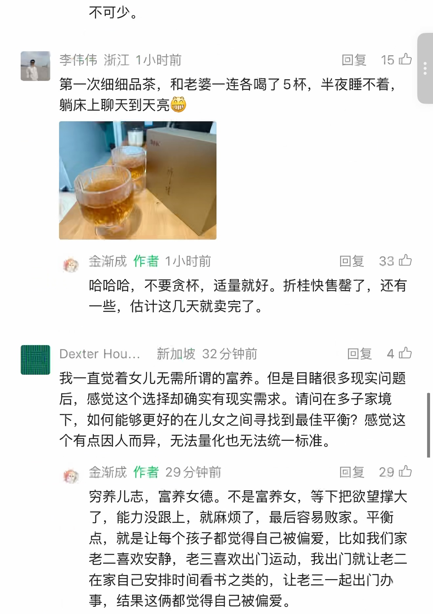
查看本页自动识别文字（OCR待核对） · 31 处低置信度提示
以下为未经逐字核对的自动识别结果，请以上方原图为准。
识别器标记 31 处低置信度，请对照截图核对
这些是识别器的风险提示，并不等于已确认的错误。
- | 李伟伟浙江 1 小时前回复十所
- 第一次细细品茶， 和老婆一连各喝了 5 杯， 半夜睡不着，
- 躺床上聊天到天亮贷
- 四， 金渐成作者 1 小时前回复 ”33 四
- 哈哈哈， 不要贪杯， 适量就好。 折桂快售刁了， 还有
- 图 Dexter Hou.… 新加坡 32 分钟前回复 《已
- 下， 如何能够更好的在儿女之间寻找到最佳平衡 9 感觉这
- 个有点因人而异， 无法量化也无法统一标准。
- 四金渐成作者 29 分钟前回复 29 办
- 穷养儿志， 富养女德。 不是富养女， 等下把欲望撑大
- 了， 能力没跟上， 就麻烦了， 最后容易败家。 平衡
第 15 页 · 原始截图
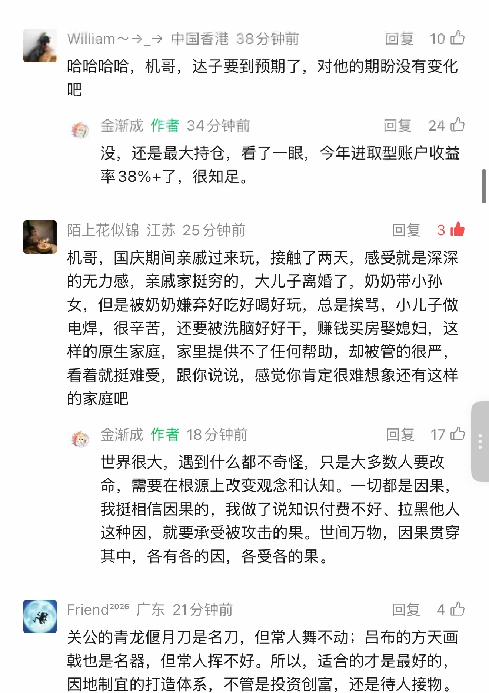
查看本页自动识别文字（OCR待核对） · 48 处低置信度提示
以下为未经逐字核对的自动识别结果，请以上方原图为准。
识别器标记 48 处低置信度，请对照截图核对
这些是识别器的风险提示，并不等于已确认的错误。
- 区 ien- 一 9 加 389 铅回复 10 办
- 哈哈哈哈， 机哥， 达子要到预期了， 对他的期盼没有变化
- 准多渐成作者 34 分钟前回复 ”24 办
- 图陌上花似锦江苏 25 分钟前回复 3 由
- 机哥， 国庆期间杀威过来玩， 接触了两天， 感受就是深深
- 的无力感， 亲威家挺穷的， 大儿子离婚了， 奶奶带小孙
- 女， 但是被奶奶嫌弃好吃好喝好玩， 总是挨骂， 小儿子做
- 电焊， 很笠苦， 还要害洗脑好好干， 赚钱买房娶媳妇， 这
- 样的原生家庭， 家里提供不了任何帮助， 却被管的很严，
- 看着就挺难受， 跟你说说， 感觉你肯定很难想象还有这样
- 痊， 金渐成作者 18 分钟前回复 17 办
- 世界很大， 遇到什么都不奇怪， 只是大多数人要改
- 我挺相信因果的， 我做了说知识付费不好、 拉黑他人
- 这种因， 就要承受被攻击的果。 世间万物， 因有果贯穿
- 到 Friend?2e 广东 21 分钟前回复 ”4 四
- 关公的青龙价月刀是名刀， 但常人舞不动 ; 吕布的方天画
- 戟也是名器， 但常人挥不好。 所以， 适合的才是最好的，
- 因地制宜的打造体系， 不管是投资创富， 还是待人接物。
第 16 页 · 原始截图
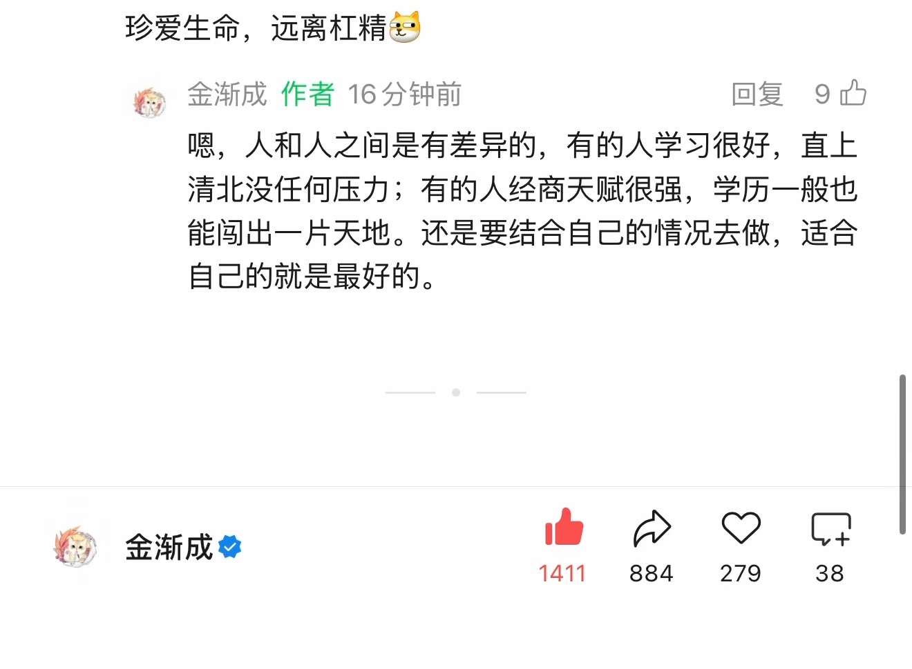
查看本页自动识别文字（OCR待核对） · 13 处低置信度提示
以下为未经逐字核对的自动识别结果，请以上方原图为准。
识别器标记 13 处低置信度，请对照截图核对
这些是识别器的风险提示，并不等于已确认的错误。
- 珍爱生命， 远离杠精盒
- 芍人金渐成作者 16 分钟前回复 9 办
- 咽， 人和人之间是有差异的， 有的人学习很好， 直上
- 清北没任何压力 ; 有的人经商天赋很强， 学历一般也
- 能间出一片天地。 还是要结合自己的情况去做， 适合
- 1411 “884 279 38
按日期浏览全部来源（同日按条目标识排序）
回到页首 ↑